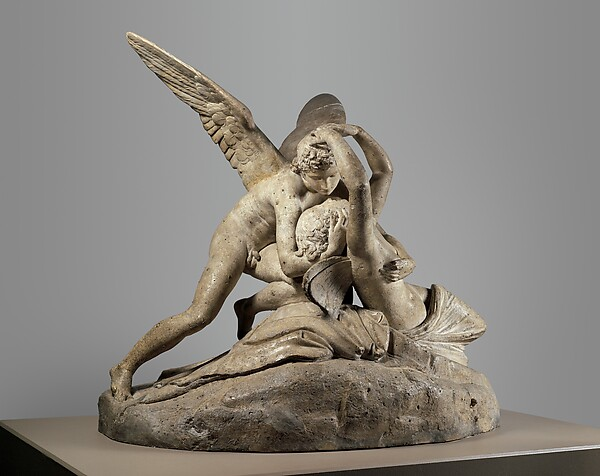

An interval held open
01 / Canova

This image is resting. The museum record below remains available.Antonio Canova · Cupid and Psyche · 1794
Look closerMuseum record
View the collection record ↗A reading
The arms make a circle, but the faces keep a little air between them. My eye stays in that interval. Love appears here as an approach that still leaves room for another person: close enough to feel, open enough to answer.